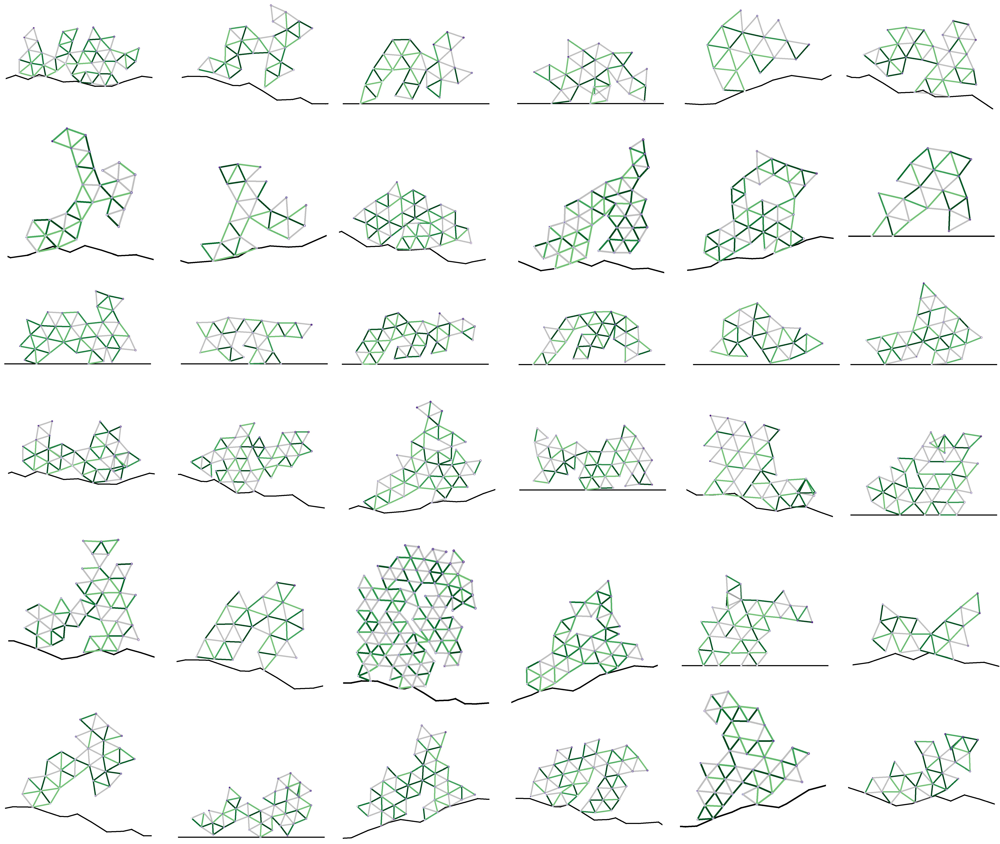

Abstract
The automatic design of robots has existed for 30 years but has been constricted by serial non-differentiable design evaluations, premature convergence to simple bodies or clumsy behaviors, and a lack of sim2real transfer to physical machines. Thus, here we employ massively-parallel differentiable simulations to rapidly and simultaneously optimize individual neural control of behavior across a large population of candidate body plans and return a fitness score for each design based on the performance of its fully optimized behavior. Non-differentiable changes to the mechanical structure of each robot in the population — mutations that rearrange, combine, add, or remove body parts — were applied by a genetic algorithm in an outer loop of search, generating a continuous flow of novel morphologies with highly-coordinated and graceful behaviors honed by gradient descent. This enabled the exploration of several orders-of-magnitude more designs than all previous methods, despite the fact that robots here have the potential to be much more complex, in terms of number of independent motors, than those in prior studies. We found that evolution reliably produces "increasingly differentiable" robots: body plans that smooth the loss landscape in which learning operates and thereby provide better training paths toward performant behaviors. Finally, one of the highly differentiable morphologies discovered in simulation was realized as a physical robot and shown to retain its optimized behavior. This provides a cyberphysical platform to investigate the relationship between evolution and learning in biological systems and broadens our understanding of how a robot's physical structure can influence the ability to train policies for it.

Citation
@inproceedings{
strgar2024evolutionandlearning,
title={Evolution and learning in differentiable robots},
author={Strgar, Luke and Matthews, David and Hummer, Tyler and Kriegman, Sam},
booktitle={Robotics: Science and Systems},
year={2024},
url={https://www.roboticsproceedings.org/rss20/p100.html}
}